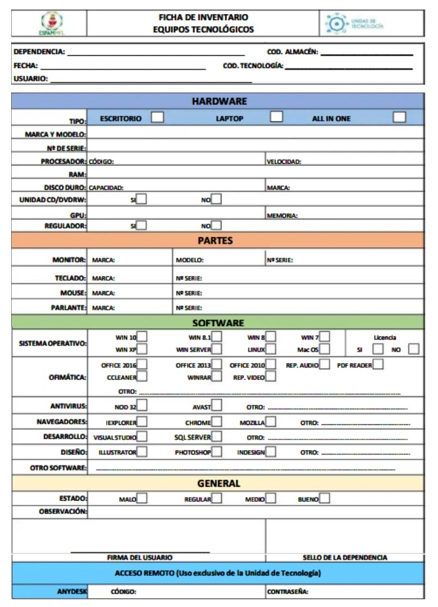
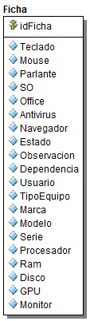
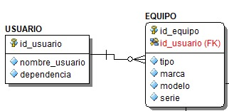
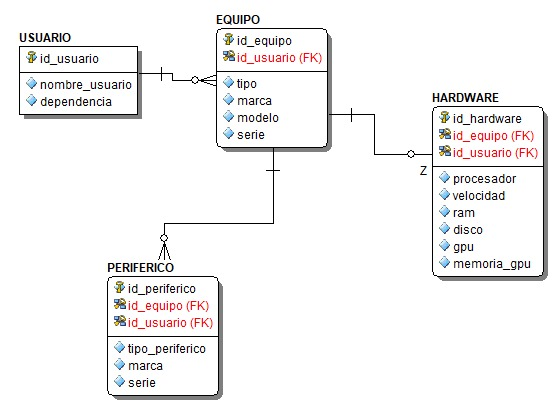
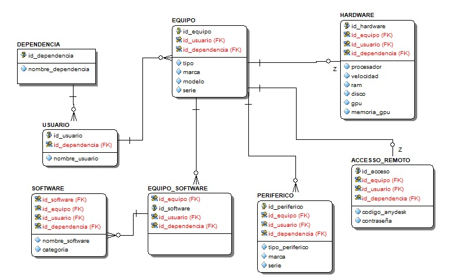

Desarrollo técnico del proceso de normalización aplicado a una ficha de inventario informático institucional, identificando entidades, atributos, relaciones y estructuras óptimas en bases de datos.

Todos los datos se encuentran mezclados en una sola estructura.

Cada campo contiene un solo valor y se separa usuario de equipo.

Se independizan tablas relacionadas con hardware y periféricos.

Modelo final profesional eliminando dependencias transitivas.
